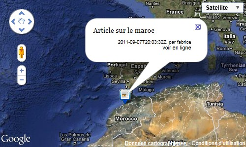

La balise #GEOMAP permet de faire afficher une carte depuis un squelette. Elle permet également, selon les paramètres qui lui sont passés d'ajouter des marqueurs sur cette carte.
Au plus simple, la balise GEOMAP peut être intégrée dans un squelette sans aucun paramètres :
[<div style="position: relative; display: block; width: 600px; height: 400px;"> (#GEOMAP) </div>]
Il faut cependant qu’elle soit intégrée dans une div ayant une hauteur explicite (en pixels), la largeur peut être exprimée en pourcentage.
Sous cette forme simplifiée, la balise produira une carte nue, sans aucun point. Si la balise est placée dans une boucle, la carte sera centrée sur l’élément de la boucle. On peut ensuite se servir des balises #GEOKML et #GEOMARKER pour ajouter du contenu.
Mais l’usage le plus courant de la balise est de désigner explicitement à la carte un objet de référence (fournissant à la fois le positionnement initial de la carte et la référence pour chercher les points à ajouter), et des points :
[<div style="position: relative; display: block; width: 600px; height: 400px;"> (#GEOMAP{id_rubrique, markers=query}) </div>]
Sous cette forme la carte affichera les articles géolocalisés de la rubrique.

Le paramètre markers peut prendre les valeurs suivantes :
La balise #GEOMAP accepte de nombreux autres paramètres, décrits ci-dessous, qui permettent de surcharger toute l’apparence de la carte (et dont beaucoup dépendent de la couche d’implémentation de la carte).
Tous les paramètres sont optionnels.
| Nom | Description | Valeur |
|---|---|---|
| map | Identifiant unique de la carte. | Identifiant numérique. |
| id_article/id_rubrique... | Objet à partir duquel est affichée la carte. S'il n'est pas géolocalisé, la carte n'est pas affichée, s'il l'est, la carte est centrée dessus, et il sert de base à la recherche des marqueurs | {id_article} ou {id_article=39}, {id_rubrique}, {id_document}, {id_breve}, {id_mot}, {id_auteur} |
| markers | Définition des marqueurs |
|
| query | Nom du fichier ajax de requête (si markers=query) | Nom du fichier ajax, sous la racine de SPIP |
| latitude | Latitude du centre de la carte | -38.5911137761474 |
| longitude | Longitude du centre de la carte | 143.036499023438 |
| zoom | Zoom initial de la carte |
| Nom | Description | Valeur |
|---|---|---|
| fond | Fond de carte par défaut | Parmi plan, satellite, mixte, physic, earth |
| ctrl_fond | Style du contrôle de changement du fond de carte | Parmi none / button / menu |
| ctrl_nav | Style du contrôle de navigation | Parmi none / small / large / 3D |
| option_dblclk_zoom | Activation du zoom par doucle-click sur la carte | oui ou non |
| option_soft_zoom | Activation du zoom continu | oui ou non |
| option_wheel_zoom | Activation du zoom par la molette | oui ou non |
| Nom | Description | Valeur |
|---|---|---|
| fond | Fond de carte par défaut | Parmi plan, satellite, mixte, physic, earth |
| ctrl_fond | Style du contrôle de changement du fond de carte | Parmi none / button / menu |
| ctrl_zoom | Style du contrôle d'échelle | Parmi none / auto / small / large |
| ctrl_pan | Style du contrôle de déplacement | Parmi none / large |
| ctrl_scale | Affichage de l'échelle | Parmi none / default |
| ctrl_street | Affichage de l'accès à StreetView | Parmi none / default |
| ctrl_rotate | Affichage du contrôle de rotation | Parmi none / default |
| ctrl_overview | Affichage du contrôle de localisation rapide | Parmi none / open / close |
| option_dblclk_zoom | Activation du zoom par doucle-click sur la carte | oui ou non |
| option_drag | Activation du déplacement de la carte avec la main | oui ou non |
| option_wheel_zoom | Activation du zoom par la molette | oui ou non |
| option_keyboard | Activation des commandes clavier | oui ou non |